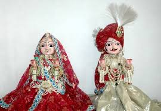
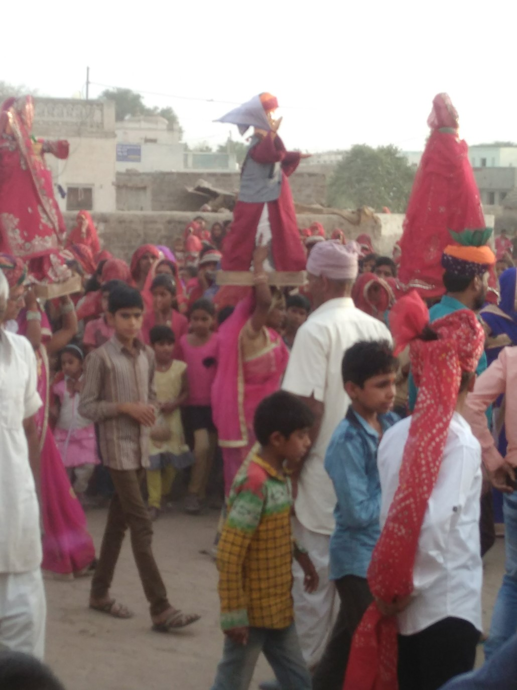
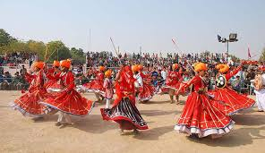
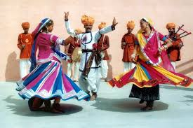
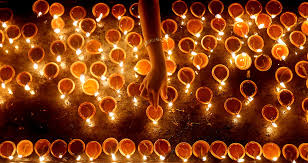
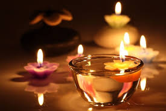

Gangaur
Gangaur is celebrated in the month of chaitra (March-April), the first month of the Hindu calendar. This month marks the end of winter and the onset of spring. The festival is all about honoring Goddess Gauri or Parvati, and celebrating marriage and love. In this festival, both married and unmarried women take part in the festivities in full enthusiasm. As for the locals, Goddess Parvati represents perfection and marital love, this festival holds a lot of importance for them.
The procession will include the cannon carriage, decorated rath, ornamented horses and camels.The sawari of the Gangaur will be almost at the end followed by DhaletChobdar, women in traditional dress with Kalash and mounted police on horse.


Gangaur is one of the most colorful and celebrated festivals of Rajasthan. It is celebrated around the state. However, the most notable festivities happen in Udaipur, Jaisalmer, Jodhpur, Nathdwara, and Bikaner. Also in Udaipur, this festival coincides with the Mewar Festival which takes place during the two days following it.
Holi
Holi is the widely celebrating festival of the year just like Diwali by the Hindus. Every year it falls in the month of Falgun (or March) which indicates the beginning of the spring season too. There is a great history and significance of celebrating this holi festival every year. Long years ago, there was a Holika, a devil sister of devil Hiranyakashyap who tried to burn Prahlad (son of her brother) in the big fire by taking him in her lap. Prahlad was a true devotee of God who was saved from fire by the God however Holika was burnt and changed to ashes. From then, Hindu people celebrate the victory of goodness over the devil power every year as a festival of holi.


It is a public holiday when all the banks, schools, colleges, offices and other institutions are closed. We celebrate this festival very happily by spraying colourful colours to each other in the morning. Generally, people celebrate holi for the whole day and come to home in the night.
Diwali
Diwali is a religious Hindu festival, celebrated as festival of lights by lighting lamps everywhere at homes, streets, shops, temples, markets, etc. People of Hindu religion wait very eagerly for this special festival of Diwali. It is the most important and favorite festival of everyone especially for kids and children of the home.


It is believed that on this day, Lord Rama returned to his hometown Ayodhya after staying in exile for fourteen long years. He was accompanied by his brother Lakshman and wife Sita. Sita was abducted by the demon, Ravana. She was kept as a hostage in his kingdom until Lord Rama defeated him and brought her back. As Lord Rama, Lakshman and Sita returned to Ayodhya, the people were thrilled and excited.
The entire town was illuminated with diyas. Sweets were distributed and people made merry. This is how we continue to celebrate this day even today.
Makar Sankranti
Makar Sankranti is one of the most auspicious day for the Hindus, and is celebrated in almost all parts of the country in myriad cultural forms, with great devotion, fervor & gaiety. The festival of Makar Sankrant traditionally coincides with the beginning of the Sun's northward journey (the Uttarayan) when it enters the sign of Makar (the Capricorn). It falls on the 14th of January every year according to the Solar Calendar. Lakhs of people take a dip in places like Ganga Sagar & Prayag and pray to Lord Sun.
.jpg)
.jpg)
It is celebrated with pomp in southern parts of the country as Pongal, and in Punjab is celebrated as Lohri & Maghi. Rajasthan & Gujarati not only look reverentially up to the sun, but also offer thousands of their colorful oblations in the form of beautiful kites all over the skyline. The Festival introduces kite enthusiasts world-wide to the intriguing beauty and cultural diversity of India.